清代（1644—1911）是中国封建社会最后一个王朝。清初画坛受董其昌影响，文人绘画占绝对优势。但由于最高统治者是满族贵族，强烈的民族矛盾促使文人画家中分离出一批遗民画家。中期由于政权巩固，宫廷绘画得到发展，但因思想控制严厉，社会矛盾加深，绘画中也出现了异端，隐晦曲折地表达了士大夫阶层的愤懑和不安。晚期受西方资本主义列国的侵略，外来文化也影响到画坛。随着清帝国的崩溃，资产阶级民主革命的高涨，新的思潮猛烈冲击着封建旧文化，中国绘画的发展，也进入了一个新的历史阶段。
中国历史上曾经两次出现过所谓的“遗民画家”，第一次是元初，代表有郑思肖等；第二次便是清初，这是由于中国传统文化观念、文人画发展与异族统治相结合而产生的。清初遗民画家人数之多、声势之大、影响之远，在中国绘画史上占有突出的地位。其代表人物除“四僧”（弘仁、髡残、朱耷、原济）外，还有龚贤、项圣谟、陈洪绶、方以智、傅山、肖云从、程邃、查士标、梅清、徐枋、姜实节、黄道周等。
弘仁（1610—1663），号渐江，俗姓江，安徽歙县人。明亡前习举子业，侍母至孝。明亡后离家出走，入福建武夷山，可能是去参加抗清活动，就在那里他出家作了和尚，师父是古航禅师。返歙后住西干五明寺。擅长山水兼画梅花，山水学倪瓒，多写黄山风景。用笔清刚，墨如海色，山石层叠多方折，则不受倪法束缚。画梅花清秀可爱，画松千姿百态，不落陈规。作品有《黄山图册》50幅，《枯槎短荻图》、《晓江风便图》等。弘仁与查士标、孙逸、汪之瑞一起称“新安四大家”（或称“海阳四家”）。又有汪家珍、郑旼、程邃等均为歙人，后人呼为新安画派。
髡残（1612—1673），字介丘，号石谿、白秃等，俗姓刘，湖广武陵（今湖南常德）人。青年时自己剪发为僧，清兵入湖南，曾遁迹武陵山中，受种种磨难。后到南京，住牛首祖堂山幽栖寺。与顾炎武、熊开元等抗清志士遗民往来，尤与程正揆过从密切。正揆，字端伯，号清溪，曾创作《江山卧游图》五百卷。时号“二谿”。髡残为人鲠直，个性倔犟，有着强烈的爱国热情。所作山水，多取黄山及南京一带风景入画，高山巨壑，叠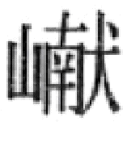层峦，烟云氤氲，草木蓊郁，元气漓淋，千变万化。而笔墨不事修饰雕琢，一任纯朴自然，因而有“粗服乱头”之称。主要是继承元四家特别是王蒙的笔法，而参以荆、关之意，在当时画坛别具一格。作品有《雨洗山根图》、《云洞流泉图》等。
朱耷（1626—1705），明宗室后裔，江西南昌人。明亡后落发为僧，别号人屋、个山等，59岁后号八大山人。朱耷心怀国破家亡之痛，有时装聋作哑，于门上大书一“哑”字，不与人交谈，有时又跑到市上去，边歌边哭，然后大笑而走。种种狂态，不一而足。然而他的绘画却异常冷静，山水从董其昌处得笔意，意境荒寒萧瑟，满目苍凉，曾在《为黄研旅写山水册》中题诗云：“郭家破法云头小，董老麻皮树上多，想见时人解图画，一峰还写宋山河。”语意双关。花鸟画淋漓奇古，题诗晦涩难读。技巧上继承陈淳、徐渭大写意画法，而于水墨渗透效果的控制运用，更加得心应用灵活自如。运笔浑圆厚朴，不假矫饰。造型夸张，越出常规，生气活泼。作品有《杨柳浴禽图》、《双雀图》、《河上花图》等。（图13—23）
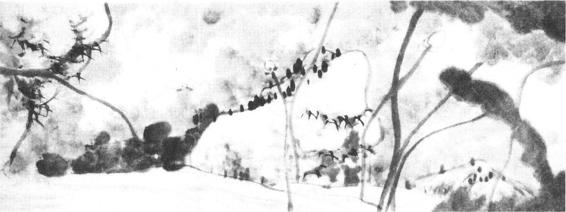
图13-23 朱耷《河上花图》局部
原济（1642—1707），号石涛、大涤子、清湘陈人、苦瓜和尚等。本姓朱，明宗室广西靖江王后裔。其父代福王监国，为人所杀。他逃走后很小就出家为僧，漫游各地。先后到过庐山、黄山、浙东一带，后到南京，晚年定居扬州。明亡时，原济年仅三岁，成年后正是清王朝巩固发展时期，因此遗民意识较少。曾经到北京，与清室权贵交往。在扬州时，两次为康熙皇帝召见。曾有诗画赞颂清王朝，因而后人多有微词。其实，他的遗民形象，是后人给他装扮起来的。擅长画山水、兰竹。山水初似梅清，后自成面貌。用笔纵横恣肆，奔放洒脱，不拘古法。画兰竹，如野战，略无纪律，而规矩法度在其中。作品有《搜尽奇峰打草稿图》、《万点恶墨图》、《余杭看山图》、《高呼与可图》等。除了绘画创作外，在绘画理论上，石涛也作出了突出贡献。其理论主张除散见于他的题画跋语中外，集中体现在《画语录》一书中。全书共18章，主要针对当时画坛临摹尚古之风，对“泥古不化”提出批评。他提倡到真山水中去“搜尽奇峰打草稿”，以创造出自己的风格。他试图运用哲学思想对画理进行精深的探索和阐述，体现了见解的高深。《画语录》是中国画论史、美学史上的重要著作。
项圣谟（1597—1658），字孔彰，号易庵，浙江嘉兴人。明末大收藏家项元汴之孙，好读书，不取功名，以画自隐。曾创作有三卷《招隐诗画图》以明其志。明亡后，作品多寄托对故国江山的怀念，如《大树风号图》，画一株古树参天而立，树下一老人拄杖仰首遥望远处青山暮霭，徘徊沉吟，不忍离去。并题诗云：“风号大树中天立，日薄西山四海孤。短策且随时旦暮，不堪回首望菰蒲。”诗画相结合，表达出沉郁、悲愤、感伤的情绪。其他作品有《且听寒响图》、《天寒有鹤守梅花图》等。其画风取宋人格法、元人气韵合而用之，不受当时流派影响。
“四王”即指王时敏、王鉴、王翚、王原祁四位画家，同吴历、恽寿平一起，并称为“清初六大家”。四王等在绘画上是董其昌的继承者，而在政治上则亲于清王朝，其绘画成就影响了整个清代，成为正统派画家。
王时敏（1592—1680），字逊之，号烟客，江苏太仓人，出身官僚家庭，以荫官至太常寺卿。家富古书画收藏，有此优越条件，他非常重视对古画的临仿，特别是对黄公望的临摹学习更下工夫。其作品被认为“凡布置设施，钩勒斫拂，水晕墨彰，悉有根底”。意境则追求安闲自在，冲淡和平的情趣。与董其昌等人称“画中九友”。作品有《雅宜山斋图》等。
王鉴（1598—1677），字园照，号湘碧，江苏太仓人。明王世贞孙，官至廉州太守。“画中九友”之一。家亦富于收藏，追摹古人，于董、巨、吴镇尤为着力。用笔沉着古厚，墨色浓重苍润。作品有《仿北苑山水图》等。
王翚（1632—1717），字石谷，号耕烟散人，江苏常熟人。早年家贫，被王时敏、王鉴收为弟子。受师影响，于画极力追摹古人。但他对前人成果的继承比较广泛，被认为是合南北二宗为一体和集唐、宋、元、明之大成的“画圣”。曾被召到宫廷，负责总体设计和绘制《康熙南巡图》12卷巨作，受到康熙皇帝的嘉奖。他技巧熟练，功力深厚，临古不拘一家一法。中年以前，笔法生动有致，晚年稍嫌习气。一生创作极其丰富，为作品最多的画家。有《秋树昏鸦图》、《寒塘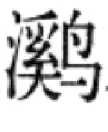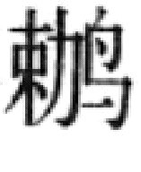图》等。他有一大批弟子，如杨晋（字子鹤）等，被称为“虞山派”。
王原祁（1642—1715），字茂京，号麓台，王时敏之孙。康熙时进士。曾奉命鉴定皇室古书画，担任《佩文斋书画谱》和《万寿盛典》两书的总裁官。他的绘画创作，一生追求模仿黄公望，用笔讲究如“金刚杵”，以干笔皴擦，层层加厚，然后以赭石、花青、石青、石绿层层加染，因而他的画显得厚重浑穆，有“浓而淡，实而清”的艺术效果。作品有《辋川图》、《松溪山馆图》、《秋山读书图》等。其弟子颇多，有“娄东派”之称。
吴历（1632—1718），字渔山，号墨井。与王翚同乡，同时师事王时敏，但两人政治生活态度有所不同。吴历以卖画为生，然“不肯向人”。晚年加入耶稣教会，居澳门多年。他也是师古的画家，以黄公望、王蒙为宗。山水丘壑层叠，醇厚苍莽，晚年用干墨焦墨短皴，更为厚实凝重，人谓其喜画“阴面山”，意境新颖。作品有《横山晴霭图》、《兴福感旧图》等。
恽寿平（1633—1690），原名恪，字寿平，后以字行，更字正叔，号南田，江苏武进人。幼曾随父参加反清武装斗争，失败后以卖画自给，不应科举。初工山水，仿元人逸笔，尤得云林法，雅淡清秀。后见王翚，自谓不能超越，耻居第二，则着力于花卉，托北宋徐崇嗣名，创“没骨法”。墨与色同时俱下，笔致超逸，蕴藉含蓄，细腻生动而清新雅丽，有富贵之态又含野逸之情，深得上层社会的普遍赞赏，被尊为“写生正派”，亦称“常州派”，对清代花鸟画影响极大。作品有《锦石秋花图》、《灵岩山图》等，与恽寿平同时的花鸟画家还有王武等。
“四王”、吴、恽，出身和政治态度虽有所不同，但私人间有很好的友谊，交往密切。作品表现了和平雅淡不食人间烟火的士大夫闲适情调，而笔墨技法则强调无一笔无来历、受到宫廷和上层社会的欢迎，被认为是山水、花鸟画的“正宗”、“正派”。“四王”之后的康熙、乾隆年间的王昱（原祁族弟）、王愫（时敏曾孙）、王玖（翚曾孙）、王宸（原祁曾孙），称为“小四王”。再后的王三锡（昱侄）、王廷元（玖长子）、王廷周（玖次子）和王鸣韶（嘉定人）称为“后四王”。他们的作品，死守家法，缺乏生气和创造性。
南京在明末清初是画家集中之地，是江南的政治中心，清初遗民们多在此活动。另外，南京商业繁荣，交通便利，古书画市场活跃，收藏家众多。靠卖画为生的画家多来此地求知音获名望。髡残、程正揆、石涛等，都于此地成名。浙江名画家兰瑛（字田叔，号蝶叟，善画山水人物及梅竹，落笔奇古。）和贵州名画家杨文骢（字龙友，弘光时官拜兵部右侍郎兼右佥都御史，清兵至被执，不屈而死。）都曾来南京，并被孔尚任写入《桃花扇》剧中。
最初提出“金陵八家”之说的是当时收藏鉴赏家周亮工《读画录》，他们是：陈卓、吴宏、樊圻、邹喆、高岑、武丹、蔡霖沧、李又李。后张庚《国朝画征录》更提为龚贤、樊圻、高岑、邹喆、吴宏、叶欣、胡慥、谢荪，遂成定论。其中以龚贤成就最高。
龚贤（约1599—1689？），字半千，号野遗、柴丈等，祖籍江苏昆山，移居南京。青年时与复社文人交往，有“短衣去国”之志。明亡后，漂泊流离，居无定所，曾远涉北方，卖画扬州，晚年筑半亩园于南京清凉山。死后贫“不能具棺殓”，而生前慷慨仗义，乐于帮助难友。绘画擅长山水，师法董源、二米及吴镇，秃笔短皴，则有范宽遗法，层层加染，浑朴凝重。善用墨，以积墨为之，黑白对比强烈，不落俗套。结构则层峦叠嶂，万壑千丘，飞瀑流泉，烟霞云霭，层出不穷。（图13—24）作品有《溪山无尽图》、《摄山栖霞图》等，散落人间者，不计其数。
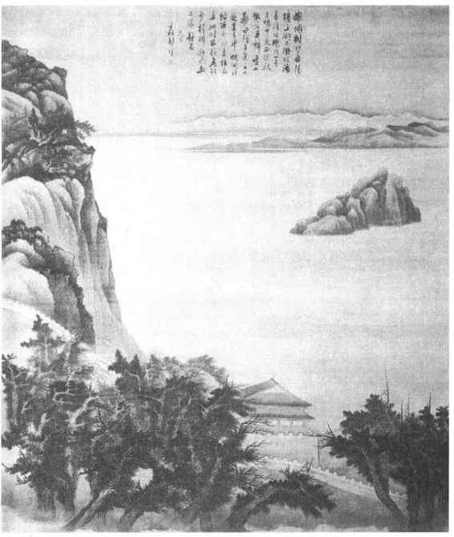
图13-24 龚贤《岳阳楼图》
清代没有画院的设置，只在内务府造办处中有画画处和如意馆，负责组织画家为宫廷服务。画家地位低下，或称“南匠”，因画家多系南方人之故，或称“画画人”。画家来源或为原在宫中服务的画家子弟，或大臣推荐，或画家毛遂自荐，均经考核再录用。其中也有大臣如王原祁、蒋廷锡等，虽也为宫廷绘画，则不在此中。
顺治初见于记载的宫廷画家只有黄应谌一人。康熙时有唐岱、焦秉贞、冷枚等。唐岱山水得王原祁指授，画风亦相近。焦秉贞善山水人物，用透视法，受西方的影响。冷枚为焦秉贞的学生，以人物仕女见长。其后至乾隆时期，画家有丁观鹏、姚文瀚、金廷标、余省、张宗苍、徐扬、陈枚等。他们的作品艺术成就远不及宋代和明代。最具有清代宫廷绘画特色并创造出了艺术成就的是宫廷中的一批来自西方的传教士画家，他们中有意大利人郎世宁、安德义、潘廷章，法国人贺清泰、王致诚，波希米亚人艾启蒙等。他们根据宫廷的需要与爱好，用中国的作画工具，综中、西不同的观察和表现方法，如人物用西法，背景则为中法，或背景用中国画家来画；面部塑造采用正面光，减轻明暗对比度，以适合中国传统欣赏习惯等等，因而创造出一种新的风格。这批画家中，以郎世宁成就最高。
郎世宁（Giuseppe Castiglione, 1688—1766），意大利米兰人。1715年来中国广州。康熙末年被荐入宫充当宫廷画师。他在近五十年中，为宫廷创作了大量的作品，深受皇帝特别是乾隆的宠爱。1747年曾奉命参加长春园内欧式建筑的设计。70岁时，皇帝为之举行庆寿仪式，死后赏三品顶戴、恩给侍郎衔。在清代宫廷画师当中，郎世宁受到的荣宠是最突出的。郎世宁为雍正、乾隆两帝及其后妃、子女画了不少肖像画，这些作品真实生动，融合中西技法，丰富了中国肖像画创作手法。每逢宫中有重大事件，皇帝则命他为之作图纪实，如《哈萨克贡马图》、《乾隆帝阅马术图》、《乾隆帝万树园赐宴图》、《塞宴四事图》、《木兰哨鹿图》、（图13—25）《阿玉锡持矛荡寇图》、《大阅图》等。这些作品虽然为歌颂皇帝及其武功之作，但它真实地记录了当时的历史事件，弥足珍贵。他还画了大量的花鸟走兽画，如《十骏图》、《白鹰图》、《郊原牧马图》、《海西知时草图》、《羚羊图》等，画法细腻逼真，但限于技法束缚，某些地方缺乏生气。此外，也有少量的油画作品和铜版画作品。最有名的《平定准部回部战图》十幅，是由郎世宁、王致诚、艾启蒙、安德义共同创稿后，送到法国刻版印制的。郎世宁在宫内还培训了一批学生，有丁观鹏、王幼学、王儒学等。在促进中、西文化艺术的交流和架设友谊桥梁上，郎世宁等宫内西方画家，作出了特殊的贡献。
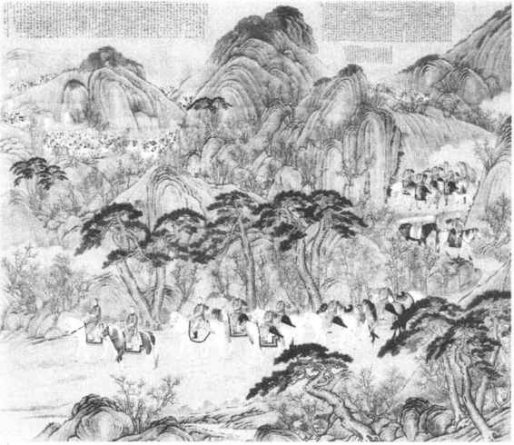
图13-25 郎世宁《木兰哨鹿图》
清代中期扬州地区商业经济繁荣，由于地处南北要冲，交通便利，文化艺术活动活跃，集中了大批画家来此卖画谋生。这些画家各有专长，风格各异。方士庶、张宗苍等人，继承了“四王”家法，长于山水。李寅、袁江、袁耀，长于界画楼台亭阁，工致细腻。肖晨的设色山水人物，则有仇英遗风。禹之鼎长于肖像创作，生动准确。而最具有地方特色对后代影响深远的，当推华嵒及被称为“八怪”的一批画家。
华嵒（1682—1756），字秋岳，号新罗，福建临汀（今上杭）人，居扬州以卖画为生。擅长人物、山水、花鸟，题材范围广泛，是一个具有多方面才能的画家。他的花鸟画吸收了恽寿平和石涛的方法，以小笔写意，重视写生，体察入微，形象姿态清新活泼，简练传神，往往赋予对象以人格化，如《梧桐栗鼠图》，画两只松鼠如小儿般嬉戏跳跃于梧枝间，十分生动可爱。山水画不拘一格，笔法受唐寅影响，布局新巧工稳，如《白云松舍图》。人物画多得益于王树谷、陈洪绶及马和之，构图奇巧，造型夸张，意趣深远。如《天山积雪图》，画天山脚下，一穿大红斗篷的单身客人牵驼而进，被孤雁一声长鸣，引起无限情思。构图奇险而平稳，设色鲜明而雅致，造型夸张而不怪，是这一作品最突出的特点。华嵒出身民间画师，而具有文人的修养，所以他的艺术能“文质相兼”，“雅俗共赏”，既赢得了上层社会的赞赏，也受到市民阶层的欢迎。
“扬州八怪”是康熙末至乾隆时期活跃于扬州的一批风格相近的画家，他们大都出身贫寒家庭，各有不同的生活遭遇。有的虽曾作过县官，但受到排挤打击，被罢官免职。他们生活在社会的中下层，靠卖画为生，能广泛地接触社会，对当时人民的疾苦有所体会和了解。出于知识分子的敏感和正义，对社会上贫富不均和官场的腐朽黑暗，进行了批评，一心想改革现状，均遭碰壁，于是便产生了归隐思想，采取洁身独好、玩世不恭的生活态度，因而被目之为“怪”。而艺术则继承了陈淳、徐渭、八大山人、石涛的水墨写意画传统，笔墨更为恣肆，奔放豪爽，不拘成法，重在“自立门户”，风格独创，并借以抒写胸中愤懑。这均与“四王”传派的重视古法、意在和平恬淡的山水画不同，也与恽寿平的蕴藉含蓄、典雅超逸的花鸟画不同，因而被认为是离开了正宗、正派，目之为“怪”。
被认为是“八怪”的画家有：汪士慎（1686—1759），字近人，号巢林，原籍安徽歙县。家贫，酷嗜茶，性爱梅，晚年双目失明，谓“不见寻常碌碌人”。善画梅竹，笔致秀雅，意境幽冷。
李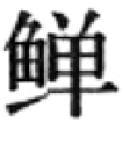（1686—？），字宗扬，号复堂，扬州兴化人。以举人检选出任山东滕县知县，以忤大吏罢归。善画花鸟，曾从蒋廷锡、高其佩学习，又取法徐渭、石涛，画风凡三变，用破笔泼墨，纵横驰骋，不拘绳法，多得天趣。
黄慎（1688—1770年尚在），字恭寿，号瘿瓢，福建宁化人。画人物，初师上官周，后以怀素草书入笔墨，粗犷奔放，气象雄伟，多取历史人物、神仙佛道及渔父樵夫作画。曾创作《群乞图》，描写灾民流落街头的痛苦生活。
金农（1687—1764），字寿门，号冬心，杭州人。博学多才，工诗词，精鉴古，善书画。曾举博学鸿词不遇，心情郁闷。擅画梅竹人马佛像等，笔法古拙，意境奇奥。作江南小景，诗意盎然，别有情致。
高翔（1693—1752），字凤冈，号西堂，扬州甘泉人。家贫而性孤傲。画山水少时亲得石涛指授，又取法渐江，画江淮间小景，颇得佳致，亦写梅花。
郑燮（1693—1765），字克柔，号板桥，兴化人。家贫失母，赖乳母抚养。由进士出任山东范县、潍县令。为官关心民间疾苦，同情贫苦百姓，深得民心。时值饥荒，多方赈灾，触犯大富，受中伤而罢官。画兰、竹、石，取法石涛、高其佩和徐渭。作品中题句表现出他非常关心国计民生，同时也抒写了他胸中的沉郁。如题《潍县署中画竹》云：“衙斋卧听萧萧竹，疑是民间疾苦声；些小吾曹州县吏，一枝一叶总关情。”曾宣言“凡吾画兰、画竹、画石，用以慰天下之劳人，非以供天下之安享人也”。
李方膺（1695—1754），字虬仲，号晴江，南通人。以父荫出任乐安、兰山、合肥等地县令。性鲠直，为官清正，不肯随上司俯仰，被诬坐牢、罢官。寄居南京，往来扬州，穷老无依，卖画为食。善画松、竹、梅、兰，取法徐渭。他画梅花，铁干铜皮，矫健蟠屈；画竹，枝叶纷披，偃仰有态，都体现着一种不屈的精神。
罗聘（1733—1799），字遁夫，号两峰，其先歙县人。幼孤贫，从金农学画，并为代笔。山水、人物、花卉均有很深造诣。自称能白日见鬼，作《鬼趣图》讽喻社会不平现象，轰动文坛。又作《卖牛歌图》，对农民的穷困寄予同情。名动公卿，旅居北京却无资以归。擅长画肖像，继承金农所创风格而有所发挥。
除以上八人外，另有高凤翰、边寿民、闵贞、陈撰、杨法等也被列入“八怪”之内。高凤翰，字西园，号南村，山东胶州人。以秀才举孝友端方科，授歙县丞，后官泰州巡盐分司，被诬入狱。无罪获释后，卖画扬州。晚年右手病废，改以左手书画，所作山水、花卉，纵逸气胜，别饶奇趣。边寿民，字颐公，专画芦雁；闵贞，字正斋，画妇女儿童，均各得其妙。
与“扬州八怪”稍前和同时，中国画坛上还有另外一批花鸟画家，他们用工笔重彩，着重写实，多受恽寿平影响，如蒋廷锡、邹一桂、沈铨、马元驭和其女马荃等。此外还有高其佩，以擅长指头画而著名。
清末由于西方资本主义的入侵，许多沿海城市被辟为通商口岸，其中以上海发展最快，成为新兴的大都会，在这里集结了又一批新的画家。朱熊、张熊、任熊，被称为“沪上三熊”。任熊、任熏、任颐，则被称为“海上三任”。后来的画家更多，虽然风格各异，各有所长，但由于都是在上海活动，时有“海派”之目。“海派”上承“扬州八怪”，直接开创了中国现代画风。其主要代表人物有：
虚谷（1824—1869），俗姓朱，安徽新安人。曾在清军中任参将，因与太平军作战有所感悟，遂出家做了和尚。往来上海、苏州、扬州等地。擅长花鸟，用枯墨秃笔，清新雅淡，意态矇眬，别具一格。画人物肖像，用笔稍工，能准确传神。
任颐（1840—1895），字伯年，浙江山阴人。少年时参加太平军，为旗手。后遇任熊，收为弟子，卖画为生。他的绘画取材广泛，功底深厚，能工能写，人物花鸟，均有创新，特别在人物画方面，更显示了他卓越的才能和高度成就。其中《关河在望》、《苏武牧羊》、《观刀图》、《雪里送炭》等作品，均有感于当时国家民族的危殆而作，寓含深刻的思想内容。肖像画如《胡公寿像》、《高邕之像》、《吴昌硕像》等，是金农、罗聘肖像画的发展，工写结合，造型严谨，揭示出人物性格，神态自然。花鸟画色彩明丽，涉笔成趣，粗中见细，使人耳目一新。任伯年坚持师法造化的写实传统，突破单纯的笔墨作风，技巧熟练，不受固定形式法则的束缚去表现自己的理想和周围美好的事物，赢得了声誉，成为一代大师。
赵之谦（1829—1884），字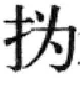叔，号悲盦，浙江会稽人。当过知县，后到上海卖画。精通书法篆刻和写意花卉，以篆隶笔法入画法，沉厚浑圆而有气势，所作松、菊、梅、荷，笔酣墨畅，形象鲜明，在开拓近现代中国画风上占有重要地位。
吴昌硕（1844—1927），名俊卿，以字行，号缶庐，浙江安吉人。曾做过一月安东县（今江苏涟水）令，便离职到上海鬻书卖画。精通金石箓刻，尤擅写石鼓文。中年始学画，师任伯年，参赵之谦，上溯李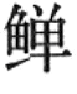、金农、朱耷、徐渭、陈淳。以金石书法入画法，纵横涂抹，奔放不拘成法，天真烂漫，独具匠心，对近现代画风影响很大，尤为齐白石所推崇。
嘉庆至光绪年间，人物画中，改琦和费丹旭以画仕女和肖像知名。改琦，字伯蕴，号七芗，松江人。专画仕女，清秀雅致而形象瘦弱。费丹旭，字子苕，号晓楼，浙江乌程人。擅长肖像画，能以简练的笔墨抓住对象的神采特征。而所画仕女，柳眉细眼，弱不禁风。明末以来，中国绘画中的妇女形象，逐渐变为瘦小文弱，至改琦、费丹旭而极，反映出封建末世士大夫阶级的病态审美情调。
中国传统的版画，是随着书籍印刷的发明兴盛而成长发展起来的。唐咸通九年（868）的刻本《金刚经》扉页上《祇树给孤园说法图》木刻，不但是我国也是世界上最古老的雕版画。甘肃发现的宋代《四美图》，印有王昭君、班姬、赵飞燕和绿珠，可说是我国最早的木版年画和招贴画。书籍中的木刻插图，宋代广为流行，宋版《列女传》插图123幅，可谓大观。
明代是中国传统版画的鼎盛时期。雕版业的发达，书籍的大量印行，特别是市民文学的发展，为版画艺术带来了空前的繁荣。许多著名的画家参与为书籍作插图，使版画的艺术水平得到大大提高。如唐寅为《西厢记》，仇英为《列女传》，陈洪绶为《离骚》、《西厢记》等所作插图即是其突出代表。此外还有郑重、赵左、刘原起、兰瑛、顾正谊、汪耕、刘素明、丁云鹏等。传统版画是绘、刻、印分工的，刻工好坏高低，关系到它的艺术水平。明代的刻工名手辈出，首推徽州的黄、汪两姓艺人。黄氏有黄铤、黄奇、黄玉林等三十余人。汪氏则有汪忠信、汪文宦、汪士珩等。其他有刘君裕、刘启先、郑圣卿、汤尚、汤复、谢茂阳、姜体乾等。杭州名手有项南洲，曾刻陈洪绶所绘《西厢记》。刘素明既是画手也是刻手，为建安名家。彩色水印木刻，是在明末创造发明的，最著名的是《十竹斋书画谱》、《十竹斋笺谱》。十竹斋是安徽休宁人胡正言寓居南京的书斋，他能书善画，“清姿博学，尤擅众巧”。“书画谱”完成于明天启七年（1633），“笺谱”完成于清顺治二年（1645）。十竹斋的套色水印木刻，使绘、刻、印在一致性上达到了很高的水平，不仅在复制绘画上逼真，而且还具有木趣刀味。
清初由画家王概主编的《芥子园画传》，吸收了十竹斋的水印木刻方法，于绘、刻、印三者都取得了卓越成就。（图13—26）王概，字安节，浙江秀水人，居南京，善山水，并工人物、花卉、翎毛。其弟王蓍（字宓草）、王臬（字司直）及李渔（芥子园主人）女婿沈因伯（字心友）均参与了《芥子园画传》的绘画、编订和出版工作。清代名画家当中参与本版画绘制的人更多。肖云从的《离骚图》、《太平山水图》，上官周的《晚笑堂画传》，费丹旭的《阴骘文图证》，任熊的《高士传》、《于越先贤传》、《剑侠传》、《列仙酒牌》等，都是版画史上的重要作品。清代宫廷为宣扬其“丰功伟业”，也采用了版画印刷形式，以广宣传。木刻《万寿庆典图》、《南巡盛典图》、《皇清职贡图》、《耕织图》等等，在绘、刻、印技术方面，都十分精良。
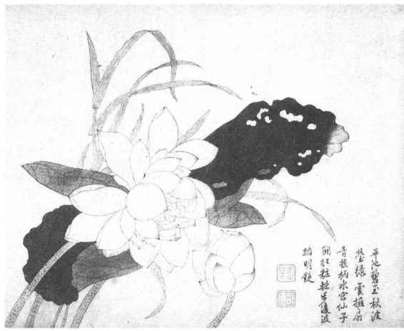
图13-26 清康熙四十年刊彩色套印本《芥子园画传》
在年节中张贴年画，反映着人民群众爱美之心和追求美好生活的愿望，在艺术上则具有浓烈的乡土气息。它在中国的历史发展上，也源远流长。现存宋人的《五瑞图》、《大傩图》、《货郎图》、《戏婴图》等，都具有年画性质。明代画家吴伟曾画过《天乙赐福》、《群仙拱寿》，杜堇画过《东王迓寿》、《五老攀桂》等，也应是年画。但是年画能够普及到更多的百姓家中，则是随着木版印刷的发展而兴盛的。明、清时代是木版年画的高峰，集中产地有：苏州桃花坞、天津杨柳青、山东潍坊、广东佛山、四川绵竹等，其他有河北武强、江苏南京和无锡、河南朱仙镇、湖南邵阳、江西九江、浙江绍兴、福建漳州及山西、陕西、甘肃等，几乎遍及全国。各地都有各自的风格特点。
年画的内容丰富，其中虽然掺杂着封建迷信的糟粕，但有不少反映社会生活面貌、风土人情以及群众思想感情和纯朴愿望的作品。按其题材内容，大致可分为四个方面：（1）神码：门神，由神荼、郁垒演变而为秦琼、尉迟敬德画像，是年画中最古老的题材。其他神祇有天官、福禄寿三星、钟馗、刘海、和合二仙、灶王等等，以及象征性的动、植物，如蝙蝠、鹿、宝瓶和象、鞍马等。（2）民俗：反映市民、农民及各行各业的生活面貌，如《姑苏万年桥》、《山塘普济桥》、《三百六十行》等，描绘了城市生活的繁荣与热闹。（图13—27）《五谷丰登》、《十男忙》、《十女忙》、《耕织图》、《宫蚕图》等，则反映了农民希图通过劳动达到丰衣足食的朴素愿望。《瑞雪图》、《丰庆图》等描绘了家庭成员在年节中为庆祝过去的好收成、祈求来年更美好而得团聚的情景。（3）戏曲故事：小说、戏曲中的故事题材，在年画中占有相当大的比重，是年节中人们所乐于说道的。最多的是《水浒传》、《岳飞传》、《杨家将》、《花木兰》、《西游记》、《白蛇传》、《梁山伯与祝英台》以及一些公案小说等。小说、戏曲年画不仅适应群众娱乐要求，同时也传播了历史知识，表现了对英雄人物的崇敬，对美丑善恶的评判，对爱国精神、反抗压迫意志和争取自由愿望的赞美。（4）妇女儿童、风景花卉：有《连年有余》（莲花、鱼与小孩）、《金玉满堂》、《二甲传胪》、《榴开百子》、《喜上眉梢》（喜鹊与梅花）、《六合同春》（鹿与鹤同画一起）、《丹凤朝阳》、《鸳鸯戏水》（夫妻和睦幸福）等百十余种，反映了人民群众对美好事物的欣赏和憧憬。
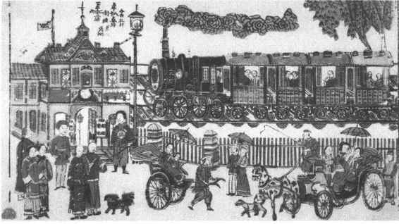
图13-27 清末苏州年画上海火车站
年画的造型简练夸张，构图丰满，色彩鲜艳明快，对比强烈，朴实无华，为群众所喜闻乐见。版画和年画，是中国古代绘画宝贵遗产中的一部分。